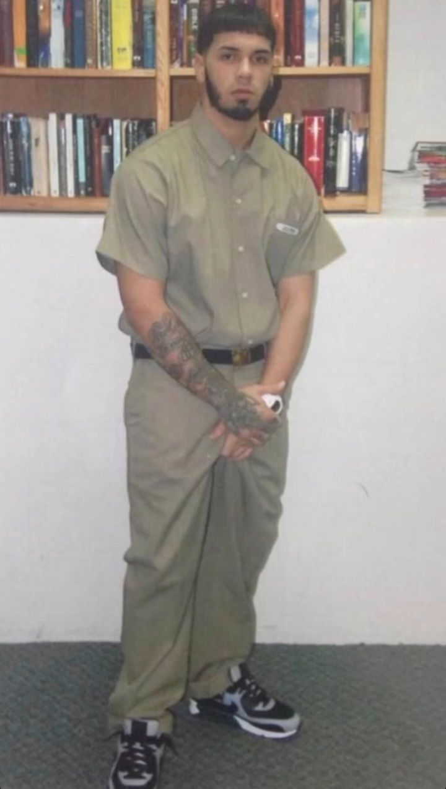
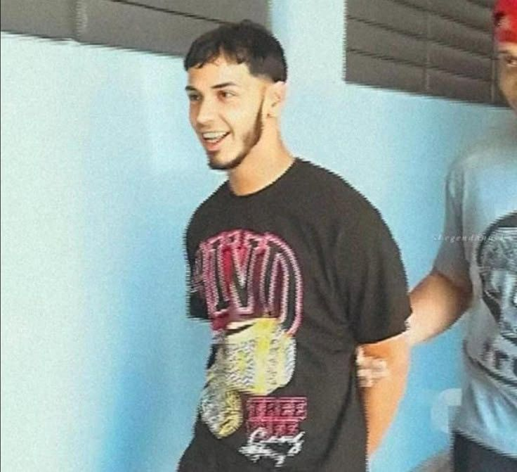

LOS INICIOS (2010-2015)
Emmanuel Gazmey no empezó desde abajo económicamente, pero sí desde cero en la calle. En 2011 lanzó su primer tema 'Demonia'. Su música era tan cruda y grosera que ninguna radio lo apoyaba, pero se volvió un virus en las calles de Puerto Rico mediante descargas digitales y pendrives.
Fue el primero en hablar de armas, drogas y sexo explícito sin censura.
EL SALTO A LA FAMA
El boom real ocurrió con 'Sola'. Su voz rasposa y su jerga callejera se convirtieron en el nuevo estándar del género urbano.
EL DÍA QUE EL TRAP SE DETUVO: EL ARRESTO


⚠️ CURIOSIDAD: "¡Me voy a cagar en la madre del diablo-!" - Gritó Anuel frente a las cámaras de televisión nacional mientras era escoltado por agentes federales hacia la patrulla. Este momento, grabado por los noticieros, se convirtió en el audio más viral de Puerto Rico ese año y consolidó su imagen de rebelde ante el sistema judicial, marcando el inicio de la leyenda de "Real Hasta la Muerte"
